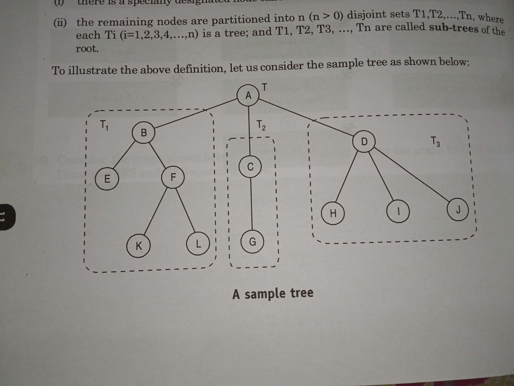
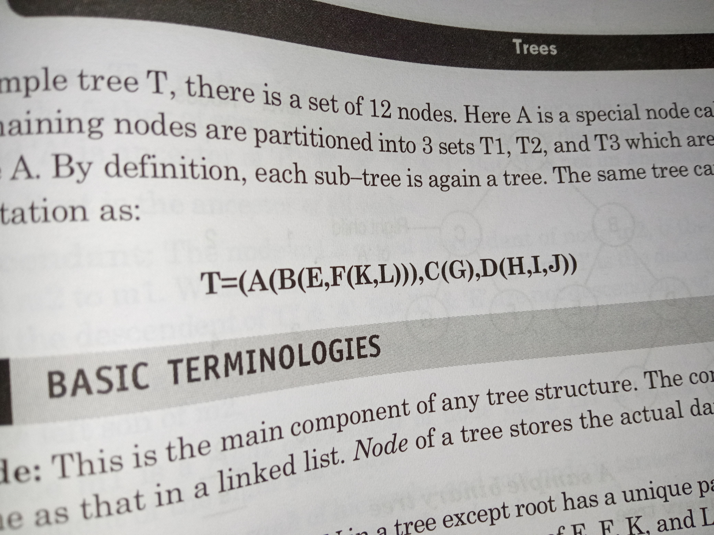
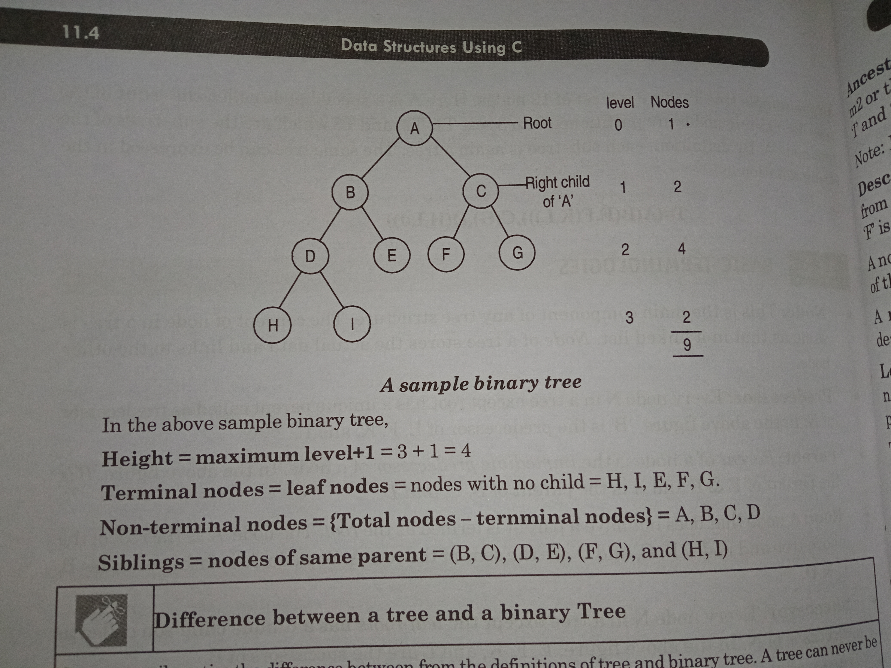

Trees
Trees vs Graphs
- Trees are special type of graphs
- Must be connected
- Must be acyclic
- Must have exactly n-1 edges, where n is number of nodes.
- Follows a heirarchial structure with a special root [ source ] node.
- Is a abstract DS
- datas are in structures called nodes
- Has a primary node called the
root.
- Branch nodes are called
sub-trees
- Nodes that have no descendents are called
leaf or terminal nodes
The other nodes are called non terminal / internal nodes
- Each node is the
parent or predecessor of its sub-tree
- Every node in a tree has "zero" or more
children or sucessors
- One or more of the sub-trees may have no element and are called
empty sub-trees
- Siblings are all the nodes that have the same parent
Level is the rank of heirarchy and root node is at level 0.
BUT the height does count all levels.
- Sequence of consequetive edges is called a path.
- If a tree has n nodes - there are also n
subtrees
- The
Depth or Height of the tree is the number of nodes in the longest path from the root node. OR
maximum number of nodes possible in a path starting from the root node.
- A set of
Disjoint trees is called a forest.
Two trees are said to be disjoint if they do not share a common vertex.
So even if there are multiple trees, if they share any of the nodes, it won't be considered as a forest.
Tree Representation ex: Tree Notation ex: - Also Trees here are named after botanical notations so names like
Ancestor, Descedant do apply.
- Extras: Going from leaf to root is called climbing, going from root to leaf is called descending.
Binary Tree
- Could either be an
empty binary tree with no nodes
NULL Tree without a node.
WHEREAS a tree always has atleast one node.
- A tree with a special designated node called the
root and
- Remaining nodes forming upto only two disjoint binary tress called
left-subtree and right-subtree
WHEREAS a tree can have n (n>0) disjoin subtrees.
- A binary tree can have atmost
two childrens
WHEREAS a tree can have more than two
- ex: 
Binary Tree formule
- no. nodes at level
l = 2l [ ONLY HOLDS GOOD FOR COMPELETE/FULL BINARY TREE]
- Total no. nodes =
2h+1-1 . where 'h' is the height of the tree
Remember the difference between a level[0] and a height[1].
But in most cases That I saw they take height to start at 0 as well i.e 0 @ root
- Minimum no. posisble nodes for a binary tree of height
h is h
- If all internal nodes have exactly two childrens then -
number of leaf nodes = number of internal nodes + 1
- Total number of binary trees possible with n nodes is
[1/(n+1)]*[2NCn].
NCr = N!/r!(n-r)!.
Definations
- Link
- This is a pointer to the node of a tree.
- Degree
- The number of childrens a particular node has
- Indegree
- The number of edges coming into a node from top
- Outdegree
- The number of edges going out of a node to bottom
- Left-skewed Binary Tree
- If there is only a left-subtree
- Right-skewed Binary Tree
- if there is only a right sub-tree
Further Types [under binary tree]
- Full[Strict] Binary Tree
- Follows the degree-rule , i.e All the nodes , except the last must have a degree of
0 or 2
- Complete Binary Tree
- That contains
maximum number of possible nodes at each level , except the last level. AND
- The last level must be left composed
- Full[Strict] vs Complete :
![full[strict] vs complete binarytree](./media/fullvscompletebinarytree.jpg)
- Almost complete binary tree
- All the levels of the nodes should be completely filler , but possible for the last level
- The last level should be filled from left to right
- The last level may not be completely full, but there should be no gaps before the missing node.
- Perfect Binary Tree
- Completed filled nodes at all levels
Representation of Binary Trees
- Sequential Representaion [array]
- Linked List Representation
- Parent Pointer
Sequential Representation [Arrays]
- Uses a 1-D array
- Requires numbering of the nodes. Starting from
node level 0, 1 and so on.
- The nodes are numbered from left to right.
- We trace in the above way creating a
Complete binary tree and leaving the ones that don't exist empty
- Since this is a Complete binary tree [ we know that evey node has exactly 2 nodes ].
The following properties hold good . And that is how we determine the relations between them.
- The father of
kth index is at index (n-1)/2.
Where n is the index in the array. And K is the numbering in the graph.
- The left child of
kth index is at index 2*K.
- The right child of
kth index is at index 2*k+1.
Advantages
- It is suitable for
Perfect Binary Tree or [negotiable] compelete binary Tree or nearly Complete binary tree
- It is efficient and convenient representation provided that the tree does not go for changes such as
insertion,deletion etc.
Disadvantages
- It is not ideal for other than complete binary tree. That is, it is not so suitable for normal binary tree.
- The size of the tree structure is predictable, this representation uses static allocation and leads to
wastage of memory space.
Insertion and Deletion of nodes cannot be performed easily. It requires the movement of many nodes to reflect the change in the level numbers of the remaining nodes.
The code to display and search a key in Complete Binary Tree and Binary Tree are written. [ in sequential representation ]
Linked List Representation
- Solves the problem of
unnecessary memory consumption by sequential representation
- has 3 fields
- Info
- Left link
- Right Link
Advantages
- Efficient use of computer memory and computer time.
- This is suitable as a tree is unpredictable and Linked list uses
DMA
- Insertion and Deletion is much
easier.
The insertion is straight forward , while the deletion is done by a pointer change.
Parent Pointer
- Same as the Linked List representation , but also stores the parent address in each node
- Useful when an algorithm needs upward traversal
- Since it stores extra pointer - that is not a commonly efficient usage.
Traversal
Visiting each node exactly once in a systematic manner.
- Preorder
- Inorder
- Postorder
Binary Search Tree
- Each node is is
greater than or equal to every node of its left subtree
- Each node is is
lesser than or equal to every node of its right subtree
- While insertion - we only insert in the terminal levels.
But in most cases That I saw they take height to start at 0 as well i.e 0 @ root
Summary
- represents relationship between elements as records or nodes
- Balanced Binary Tree is one where the difference in no. nodes in the left-subtree and right-subtree is <=1
- only left-subtree left skewed binary tree . . .
Final[test]